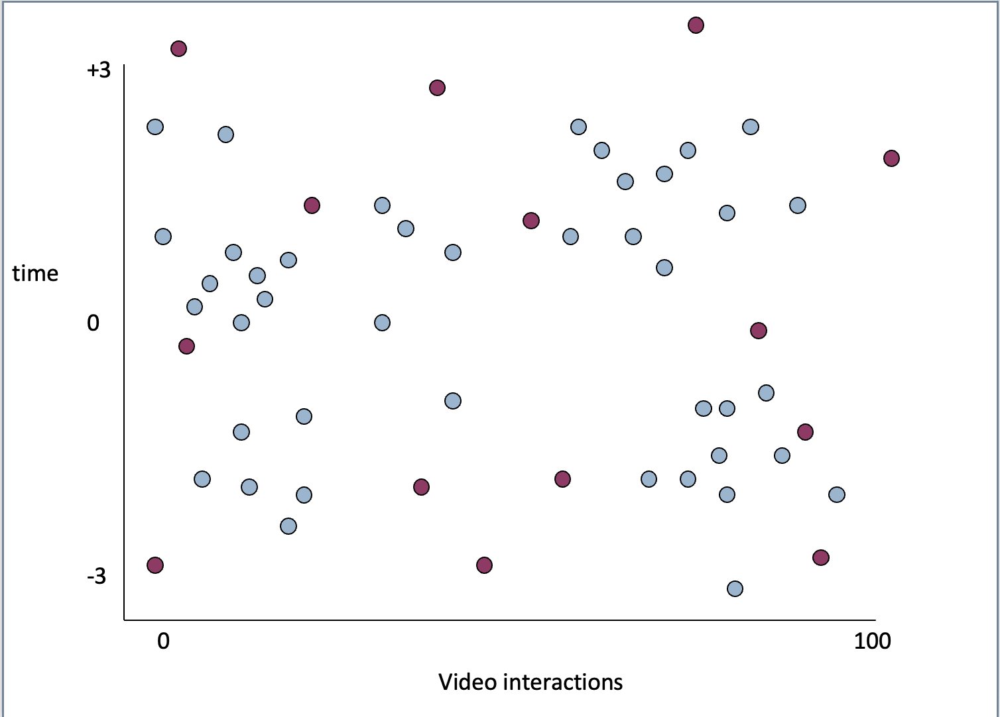
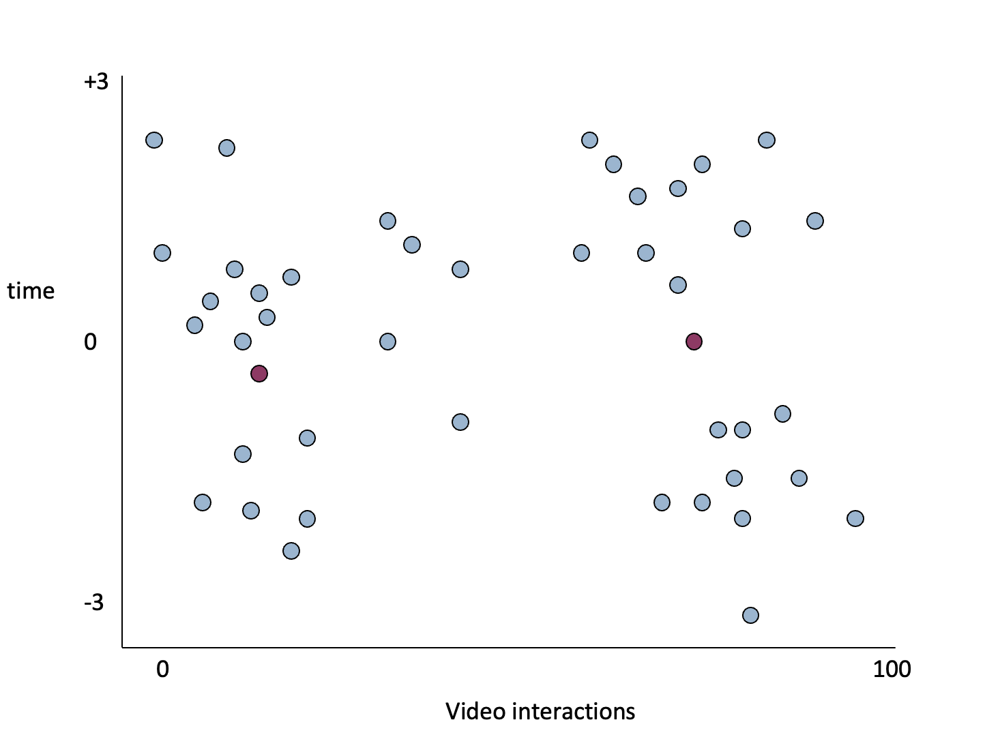
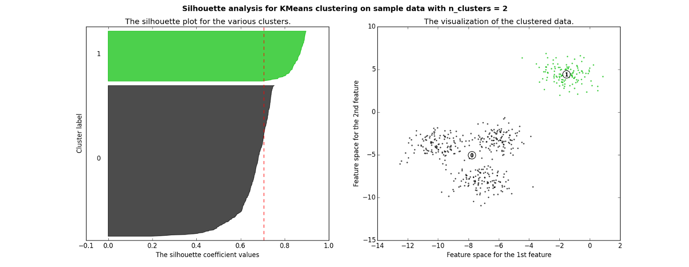
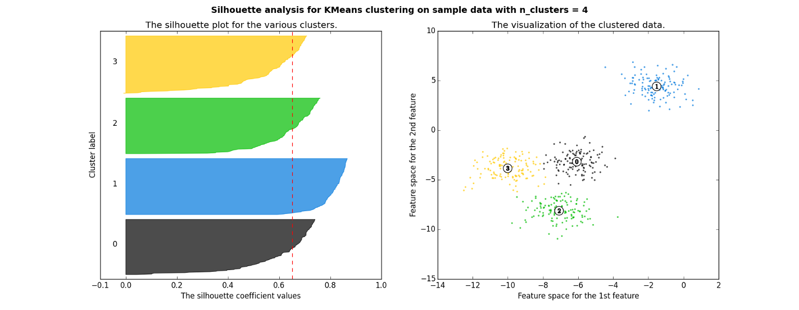
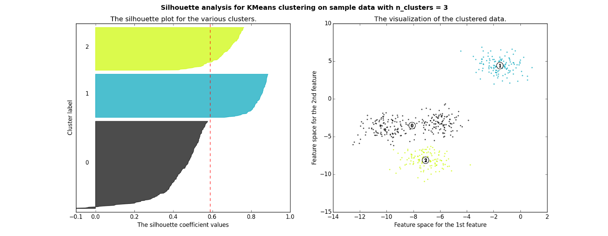
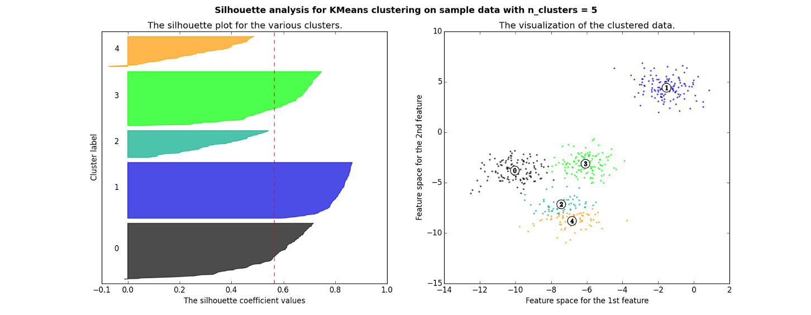
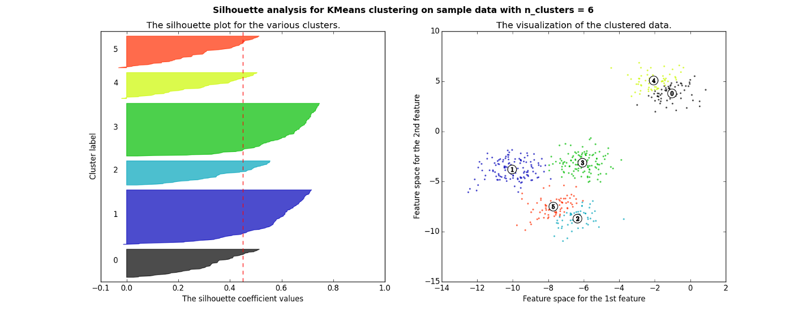

Structure Discovery
Clustering Validation and Selection of K
How do we choose?
A value for k
Which set of clusters to use, after 17 randomized restarts
First…
- Let’s take the case where we have 17 randomized restarts, each involving the same number of clusters
Distortion (Also called Mean Squared Deviation)
Take each point P
Find the centroid of P’s cluster C
Find the distance D from C to P
Square D to get D’
- Sum all D’ to get Distortion
Distance
Usually Euclidean distance
Distance from A to B in two dimensions
\(\sqrt{(A_{x}-B_{x})^{2}-(A_{y}-B_{y})^{2}}\)
Distance
- Euclidean distance can be computed for an arbitrary number of dimensions
\(\sqrt{\sum_{}^{}(A_{i}-B_{i})^{2}}\)
Distortion
Works for choosing between randomized restarts
Does not work for choosing cluster size
Why not?
More clusters almost always leads to smaller Distortion
Distance to nearest cluster center should almost always be smaller with more clusters
It only isn’t when you have bad luck in your randomization
Cross-validation can’t solve this problem
A different problem than prediction modeling
You’re not trying to predict specific values
You’re determining whether any center is close to a given point
- More clusters cover the space more thoroughly
- So Distortion will often be smaller with more clusters, even if you cross-validate
An Example
- 14 centers, ill-chosen (you might get this by conducting cross-validation with too many centers)
- 2 centers, well-chosen (you might get this by conducting cross-validation with not enough centers)
Example
Example
An Example
- The ill-chosen 14 centers will achieve a better Distortion than the well-chosen 2 centers
Solution
- Penalize models with more clusters, according to how much extra fit would be expected from the additional clusters
You can use the Bayesian Information Criterion (BIC) or Akaike Information Criterion (AIC) to do this
- Not just the same as cross-validation for this problem!
Using an Information Criterion
Assess how much fit would be spuriously expected from a random N centroids (without allowing the centroids to move)
Assess how much fit you actually had
- Find the difference
So how many clusters?
- Try several values of k
- Find “best-fitting” set of clusters for each value of k
- Choose k with best value of BIC (or AIC)
Silhouette Analysis
An increasingly popular method for determining how many clusters to use
Silhouette Analysis
- Silhouette plot shows how close each point in a cluster is to points in adjacent clusters
Silhouette values scaled from -1 to 1
Close to +1: Data point is far from adjacent clusters
Close to 0: Data point is at boundary between clusters
Close to -1: Data point is closer to other cluster than its own cluster
Silhouette Formula
For each data point i in Cluster C
Find C* = cluster which has the lowest average distance of i from all the data points in cluster c*
A(i) = average distance of i from all other data points in same cluster C
B(i) = average dissimilarity of i from all other data points in cluster C*
\(S(i) = \frac{B(i)-A(i))}{max({A(i),B(i))}}\)
Example from
http://scikit-learn.org/ stable/auto_examples/cluster/ plot_kmeans_silhouette_analysis.html
Good clusters
Good clusters
Bad clusters
Bad clusters
Bad clusters
So in this example
2 and 4 clusters are reasonable choices
3, 5, and 6 clusters are not good choices
Eigengap
- In spectral clustering (which we haven’t talked about yet)
- There is also the option of choosing the number of clusters that maximizes the eigengap (difference between consecutive eigenvalues)
Alternate approach
- One question you should ask when choosing the number of clusters is – why am I conducting cluster analysis?
If your goal is to just discover qualitatively interesting patterns in the data, you may want to do something simpler than using an information criterion or silhouette analysis
- Add clusters until you don’t get interesting new clusters anymore